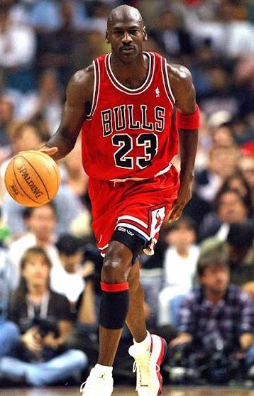

BIOGRAPHIE
Michael Jeffrey Jordan, (aussi appelé par ses initiales MJ), né le 17 février 1963 à Brooklyn (New York).
Il est un ancien joueur de basket-ball américain, ayant évolué dans le championnat nord-américain professionnel (NBA), de 1984 à 2003, ainsi qu'avec l’équipe nationale américaine.
Il a joué 15 saisons dans la National Basketball Association (NBA) entre 1984 et 2003 pour les Chicago Bulls et les Washington Wizards.
Il est largement considéré comme le meilleur joueur de tous les temps et l'un des plus grands champions de tous les temps.
Il a contribué à populariser le basket-ball et la NBA à travers le monde dans les années 1980 et 1990.